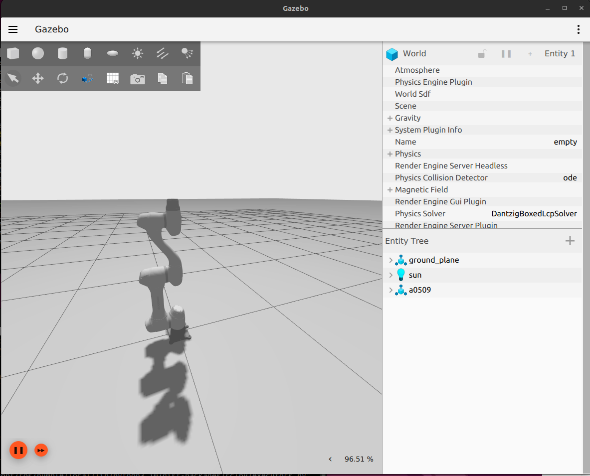
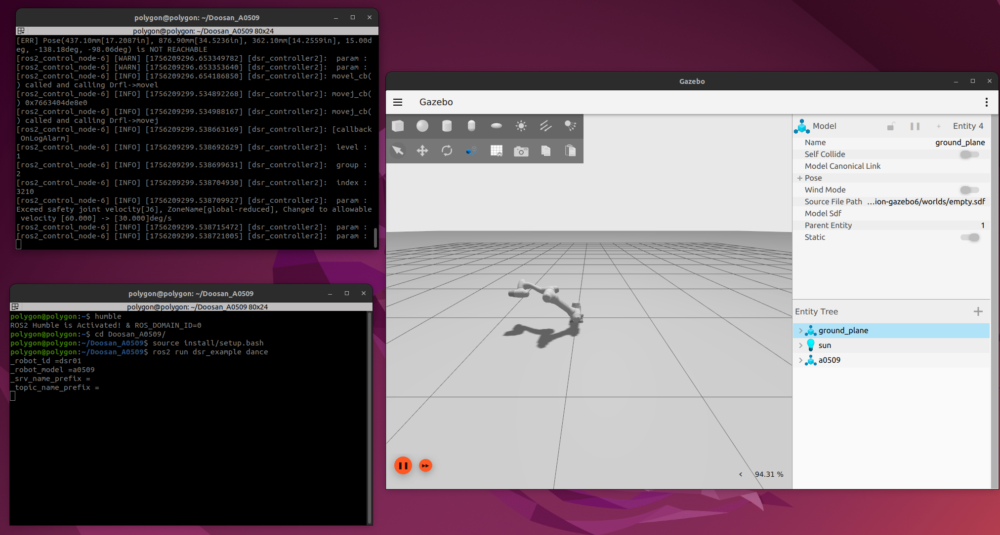
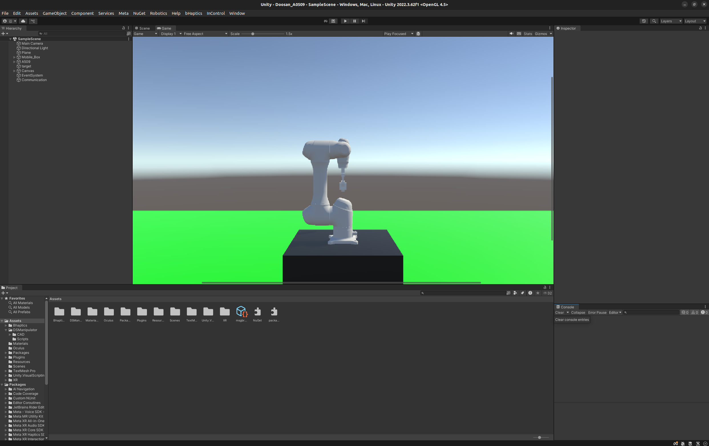
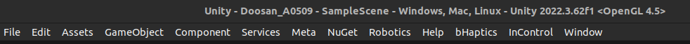
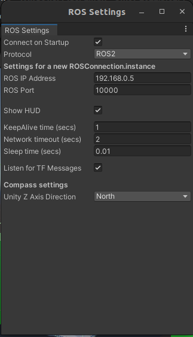
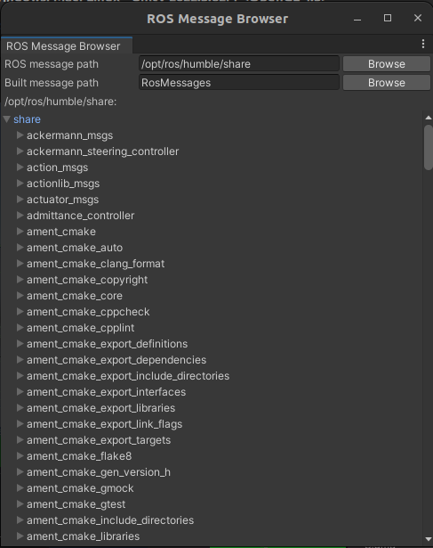

[Environment]
Ubuntum 22.04
ROS2 Humble
Unity 6.0 (6000.0.55f1)
Unity에서 A0509 모델을 움직이면 각 조인트의 관절 값을 ROS2 토픽으로 퍼블리시하고 해당 관절값을 Doosan Robotics의 A0509나 Gazebo 등의 시뮬레이션 환경에 트윈하는 프로젝트
1. 패키지 구성
https://github.com/DoosanRobotics/doosan-robot2
GitHub - DoosanRobotics/doosan-robot2: ROS 2 for Doosan Robot
ROS 2 for Doosan Robot. Contribute to DoosanRobotics/doosan-robot2 development by creating an account on GitHub.
github.com
sudo apt-get update
sudo apt-get install -y libpoco-dev libyaml-cpp-dev wget \
ros-humble-control-msgs ros-humble-realtime-tools ros-humble-xacro \
ros-humble-joint-state-publisher-gui ros-humble-ros2-control \
ros-humble-ros2-controllers ros-humble-gazebo-msgs ros-humble-moveit-msgs \
dbus-x11 ros-humble-moveit-configs-utils ros-humble-moveit-ros-move-group \
ros-humble-gazebo-ros-pkgs ros-humble-ros-gz-sim ros-humble-ign-ros2-controlsudo sh -c 'echo "deb http://packages.osrfoundation.org/gazebo/ubuntu-stable `lsb_release -cs` main" > /etc/apt/sources.list.d/gazebo-stable.list'
wget http://packages.osrfoundation.org/gazebo.key -O - | sudo apt-key add -
sudo apt-get update
sudo apt-get install -y libignition-gazebo6-dev ros-humble-gazebo-ros-pkgs ros-humble-ros-gz-sim ros-humble-ros-gzsource /opt/ros/humble/install/setup.bash
mkdir -p ~/Doosan_A0509/src
cd ~/Doosan_A0509/src
git clone -b humble https://github.com/doosan-robotics/doosan-robot2.git
rosdep install -r --from-paths . --ignore-src --rosdistro $ROS_DISTRO -ycd ~/Doosan_A0509/src/doosan-robot2
chmod +x ./install_emulator.sh
sudo ./install_emulator.shcd ~/Doosan_A0509
colcon build
source install/setup.bash
2. [1차 목표] : ROS2와 Gazebo 통신
- 앞서 git clone한 패키지 내 아래 경로의 파이썬 파일을 다음과 같이 수정해주자. -> dsr_example2 패키지에서 dsr_common2 패키지에 있는 파일을 import 해야 하므로 import 부분 코드의 경로 수정이 필요하다. (해당 패키지의 필요한 파일을 전부 복사해서 dsr_example2에 붙여넣는 방법도 있겠지만 파일 구조가 복잡해지고 괜히 빌드 과정에서 꼬일 것 같아서 시도해보지 않았다.)
- 또한 해당 위치에는 dance_m1013.py가 있겠지만 우리가 사용할 모델은 a0509이므로 보기좋게 파일 이름을 바꾸어 주었다.
/Doosan_A0509/src/doosan-robot2/dsr_example2/dsr_example/dsr_example/demo/dance_a0509.py
import rclpy
import os
import sys
# for single robot
ROBOT_ID = "dsr01"
ROBOT_MODEL= "a0509"
from dsr_common2 import DR_init # 기존과 달라진 부분
DR_init.__dsr__id = ROBOT_ID
DR_init.__dsr__model = ROBOT_MODEL
def main(args=None):
rclpy.init(args=args)
node = rclpy.create_node('dsr_example_demo_py', namespace=ROBOT_ID)
DR_init.__dsr__node = node
try:
from dsr_common2.DSR_ROBOT2 import print_ext_result, movej, movel, movec, move_periodic, move_spiral, set_velx, set_accx, DR_BASE, DR_TOOL, DR_AXIS_X, DR_MV_MOD_ABS # 기존과 달라진 부분
# print_result("Import DSR_ROBOT2 Success!")
except ImportError as e:
print(f"Error importing DSR_ROBOT2 : {e}")
return
#################
### Set values ##
set_velx(30, 20)
set_accx(60, 40)
JReady = [0, -20, 110, 0, 60, 0]
TCP_POS = [0, 0, 0, 0, 0, 0]
J00 = [-180, 0, -145, 0, -35, 0]
J01r = [-180.0, 71.4, -145.0, 0.0, -9.7, 0.0]
J02r = [-180.0, 67.7, -144.0, 0.0, 76.3, 0.0]
J03r = [-180.0, 0.0, 0.0, 0.0, 0.0, 0.0]
J04r = [-90.0, 0.0, 0.0, 0.0, 0.0, 0.0]
J04r1 = [-90.0, 30.0, -60.0, 0.0, 30.0, -0.0]
J04r2 = [-90.0, -45.0, 90.0, 0.0, -45.0, -0.0]
J04r3 = [-90.0, 60.0, -120.0, 0.0, 60.0, -0.0]
J04r4 = [-90.0, 0.0, -0.0, 0.0, 0.0, -0.0]
J05r = [-144.0, -4.0, -84.8, -90.9, 54.0, -1.1]
J07r = [-152.4, 12.4, -78.6, 18.7, -68.3, -37.7]
J08r = [-90.0, 30.0, -120.0, -90.0, -90.0, 0.0]
JEnd = [0.0, -12.6, 101.1, 0.0, 91.5, -0.0]
dREL1 = [0, 0, 350, 0, 0, 0]
dREL2 = [0, 0, -350, 0, 0, 0]
velx = [0, 0]
accx = [0, 0]
vel_spi = [400, 400]
acc_spi = [150, 150]
J1 = [81.2, 20.8, 127.8, 162.5, 56.1, -37.1]
X0 = [-88.7, 799.0, 182.3, 95.7, 93.7, 133.9]
X1 = [304.2, 871.8, 141.5, 99.5, 84.9, 133.4]
X2 = [437.1, 876.9, 362.1, 99.6, 84.0, 132.1]
X3 = [-57.9, 782.4, 478.4, 99.6, 84.0, 132.1]
amp = [0, 0, 0, 30, 30, 0]
period = [0, 0, 0, 3, 6, 0]
x01 = [423.6, 334.5, 651.2, 84.7, -180.0, 84.7]
x02 = [423.6, 34.5, 951.2, 68.2, -180.0, 68.2]
x03 = [423.6, -265.5, 651.2, 76.1, -180.0, 76.1]
x04 = [423.6, 34.5, 351.2, 81.3, -180.0, 81.3]
x0204c = [x02, x04]
###########################
### A variety of motions ##
while rclpy.ok():
movej(JReady, v=20, a=20)
movej(J1, v=0, a=0, t=3)
movel(X3, velx, accx, t=2.5)
for i in range(0, 1):
movel(X2, velx, accx, t=2.5, radius=50, ref=DR_BASE, mod=DR_MV_MOD_ABS)
movel(X1, velx, accx, t=1.5, radius=50, ref=DR_BASE, mod=DR_MV_MOD_ABS)
movel(X0, velx, accx, t=2.5)
movel(X1, velx, accx, t=2.5, radius=50, ref=DR_BASE, mod=DR_MV_MOD_ABS)
movel(X2, velx, accx, t=1.5, radius=50, ref=DR_BASE, mod=DR_MV_MOD_ABS)
movel(X3, velx, accx, t=2.5, radius=50, ref=DR_BASE, mod=DR_MV_MOD_ABS)
movej(J00, v=60, a=60, t=6)
movej(J01r, v=0, a=0, t=2, radius=100, mod=DR_MV_MOD_ABS)
movej(J02r, v=0, a=0, t=2, radius=50, mod=DR_MV_MOD_ABS)
movej(J03r, v=0, a=0, t=2)
movej(J04r, v=0, a=0, t=1.5)
movej(J04r1, v=0, a=0, t=2, radius=50, mod=DR_MV_MOD_ABS)
movej(J04r2, v=0, a=0, t=4, radius=50, mod=DR_MV_MOD_ABS)
movej(J04r3, v=0, a=0, t=4, radius=50, mod=DR_MV_MOD_ABS)
movej(J04r4, v=0, a=0, t=2)
movej(J05r, v=0, a=0, t=2.5, radius=100, mod=DR_MV_MOD_ABS)
movel(dREL1, velx, accx, t=1, radius=50, ref=DR_TOOL, mod=DR_MV_MOD_ABS)
movel(dREL2, velx, accx, t=1.5, radius=100, ref=DR_TOOL, mod=DR_MV_MOD_ABS)
movej(J07r, v=60, a=60, t=1.5, radius=100, mod=DR_MV_MOD_ABS)
movej(J08r, v=60, a=60, t=2)
movej(JEnd, v=60, a=60, t=4)
move_periodic(amp, period, 0, 1, ref=DR_TOOL)
move_spiral(rev=3, rmax=200, lmax=100, v=vel_spi, a=acc_spi, t=0, axis=DR_AXIS_X, ref=DR_TOOL)
movel(x01, velx, accx, t=2)
movel(x04, velx, accx, t=2, radius=100, ref=DR_BASE, mod=DR_MV_MOD_ABS)
movel(x03, velx, accx, t=2, radius=100, ref=DR_BASE, mod=DR_MV_MOD_ABS)
movel(x02, velx, accx, t=2, radius=100, ref=DR_BASE, mod=DR_MV_MOD_ABS)
movel(x01, velx, accx, t=2)
movec(pos1=x02, pos2=x04, v=velx, a=accx, t=4, radius=360, mod=DR_MV_MOD_ABS, ref=DR_BASE)
print('good bye!')
rclpy.shutdown()
if __name__ == "__main__":
main()
다음은 아래 경로의 setup.py를 수정하자. demo 폴더 안에 우리가 사용할 dance_a0509.py (위에서 이름을 바꾸었으므로 m1013이 아닌 a0509 되어 있을것이다.)가 있기에 demo 폴더도 패키지로 인식하기 위해 packages 옵션 부분을 수정해주고 위에서 파일이름을 바꾸었으므로 entry_points 옵션도 그에 맞게 수정해주어야 한다.
/Doosan_A0509/src/doosan-robot2/dsr_example2/dsr_example/setup.py
from setuptools import find_packages, setup
package_name = 'dsr_example'
setup(
name=package_name,
version='0.0.0',
packages=find_packages(include=['dsr_example','dsr_example.*']),
data_files=[
('share/ament_index/resource_index/packages',
['resource/' + package_name]),
('share/' + package_name, ['package.xml']),
],
install_requires=['setuptools'],
zip_safe=True,
maintainer='gossi',
maintainer_email='mincheol710313@gmail.com',
description='TODO: Package description',
license='BSD',
tests_require=['pytest'],
entry_points={
'console_scripts': [
'dance = dsr_example.demo.dance_a0509:main',
'single_robot_simple = dsr_example.simple.single_robot_simple:main',
'slope_demo = dsr_example.demo.slope_demo:main',
],
},
)
이대로 빌드하면 DR_common2.py나 DSR_ROBOT2.py가 이상하다고 에러가 발생할 것이다. 두 파일도 import 하는 방식을 수정해주어야 한다. (import 부분만 첨부)
/Doosan_A0509/src/doosan-robot2/dsr_common2/imp/DR_common2.py
# -*- coding: utf-8 -*-
# ##
# @file DR_common2.py
# @brief define ROS2 DRL common functions
# @author kabdol2<kabkyoum.kim@doosan.com>
# @version 0.10
# @Last update date 2021-02-15
# @details
#
import collections
import collections.abc
import numpy #for ROS2 add type ndarray
from .DR_error2 import */Doosan_A0509/src/doosan-robot2/dsr_common2/imp/DSR_ROBOT2.py
#-*- coding: utf-8 -*-
# ##
# @mainpage
# @file DSR_ROBOT2.py
# @brief Doosan Robotics ROS2 service I/F module
# @author kabdol2<kabkyoum.kim@doosan.com>
# @version 0.10
# @Last update date 2021-02-05
# @details
#
# history
# -
#
__ROS2__ = True
import rclpy
import os
import threading, time
from std_msgs.msg import String,Int32,Int32MultiArray,Float32,Float64,Float32MultiArray,Float64MultiArray,MultiArrayLayout,MultiArrayDimension
import sys
sys.dont_write_bytecode = True
#import numpy as np
from .DRFC import *
from .DR_common2 import *
from dsr_msgs2.msg import *
from dsr_msgs2.srv import *
#-----------------------------------------------------------------------------------
from . import DR_init
g_node = None
g_node = DR_init.__dsr__node
이후 터미널을 열어 아래 명령 실행
source /opt/ros/humble/install/setup.bash
cd ~/Doosan_A0509
colcon build
source install/setup.bash
ros2 launch dsr_bringup2 dsr_bringup2_gazebo.launch.py mode:=virtual host:=127.0.0.1 port:=12346 name:=dsr01 x:=0 y:=0
터미널을 하나 더 열어 아래 명령 실행
source /opt/ros/humble/install/setup.bash
cd ~/Doosan_A0509
source install/setup.bash
ros2 run dsr_example dancedance_a0509.py에 미리 설정된 값대로 Gazebo에서 움직이는 것을 확인할 수 있다.

3. [2차 목표] Unity - ROS2 통신
Doosan Robotics의 A0509 모델을 Unity에 로드한 프로젝트가 필요하다. (유니티 프로젝트 이름은 동일하게 Doosan_A0509로 하였다.) - 유니티 프로젝트 파일은 사정상 공유할 수 없어 직접 모델을 가져와서 올려주어야 한다...

3-1. ROS2 to Unity TCP 통신 Tool 설치
우선 생성한 유니티 프로젝트 폴더 내부에 ros2 워크스페이스를 만들어야 한다.
cd ~/Unity/project/Doosan_A0509
mkdir -p ~/ros_ws/src
cd ~/rosw_ws/src
git clone -b "main-ros2" --single-branch https://github.com/Unity-Technologies/ROS-TCP-Endpoint.git
source /opt/ros/humble/install/setup.bash
source install/setup.bash
colcon build
3-2. 유니티 내부 설정
유니티 내에서 Window -> Package Manager
Package Manager 창의 왼쪽 위 + 클릭 -> Add package from git URL
아래 주소 넣고 ADD
https://github.com/Unity-Technologies/ROS-TCP-Connector.git?path=/com.unity.robotics.ros-tcp-connector
재시작하면 유니티 화면 상단에 Robotics 메뉴가 추가되어 있음 (NuGet, Meta 등은 없어도 괜찮다. Robotics가 생기기만 했으면 ok)

터미널을 열고 아래 명령 실행하여 우분투 IP 주소를 확인
hostname -I
Robotics -> ROS Settings에서 Protocol을 ROS2로 변경하고 ROS IP Address를 위 명령으로 확인한 주소를 입력 (여러 개가 나왔다면 가장 처음걸로 넣으면 된다.)

다음으로 Robotics -> ROS Message Browser에서 ROS message path를 /opt/ros/humble/share로 설정

3-3. 유니티 퍼블리시 코드 설정
A0509 최상단 오브젝트에 아래 2개의 코드 추가
- 현재 로봇팔의 관절값을 구하는 코드
// 역할: IK 계산 및 JointStatePublisher를 통한 ROS2로의 데이터 전송 요청
using System.Collections;
using System.Collections.Generic;
using UnityEngine;
using UnityEngine.UI;
using MathNet.Numerics.LinearAlgebra;
using MathNet.Numerics.LinearAlgebra.Double;
public class Impedance_Control : MonoBehaviour
{
[Header("ROS Communication")]
public JointStatePublisher jointPublisher; // ROS로 관절 값을 보낼 퍼블셔
[Header("Target Objects")]
public GameObject ee_Target; // 끝단(End-Effector) 타겟
public GameObject target; // 목표 타겟 오브젝트
public GameObject Axis_45; // 충돌 감지용 오브젝트
[Header("UI")]
public Text debugText;
#region Private Variables
private GameObject[] joint = new GameObject[6];
private float[] angle = new float[6];
private float[] angle_ = new float[6];
private Vector3[] point = new Vector3[7];
private Vector3[] axis = new Vector3[6];
private Quaternion[] rotation = new Quaternion[6];
private Quaternion[] wRotation = new Quaternion[6];
private float?[] minAngle = new float?[6];
private float?[] maxAngle = new float?[6];
private float[] minAngleVelocity = new float[6];
private float[] maxAngleVelocity = new float[6];
private Vector3[] vangle = new Vector3[6];
private Vector3 pos;
private Vector3 rot;
private float d_tolerance = 0.01f;
private float r_tolerance = 0.5f;
private int maxIterations = 10;
private float[] previousAngles = new float[6];
private Vector3 ee_target_vangle = new Vector3();
private Vector3 target_vangle = new Vector3();
public float sigma = 2.0f;
public float mu = 0.0f;
private Vector3 workspaceCenter = new Vector3(0, 0.1555f, 0);
private float workspaceRadius = 0.95f;
private float innerRadius = 0.35f;
private Vector3 cubeCenter = new Vector3(0, -0.3f, 0);
private float cubeSide = 0.315f;
private float bufferZone = 0.22f;
public float Kp = 50.0f;
public float Kd = 10.0f;
public float mass = 1.0f;
private Vector3 eeVelocity;
private Vector3 targetVelocity;
#endregion
void Start()
{
#region Start Method Logic
for (int i = 0; i < joint.Length; i++)
{
joint[i] = GameObject.Find("Axis_" + i.ToString());
}
angle[0] = 0f;
angle[1] = 0f;
angle[2] = 90f;
angle[3] = 0f;
angle[4] = 90f;
angle[5] = 0f;
for (int i = 0; i < angle_.Length; i++)
{
angle_[i] = 0f;
}
minAngle[0] = -359f; maxAngle[0] = 359f;
minAngle[1] = -90f; maxAngle[1] = 90f;
minAngle[2] = -125f; maxAngle[2] = 125f;
minAngle[3] = -359f; maxAngle[3] = 359f;
minAngle[4] = -135f; maxAngle[4] = 135f;
minAngle[5] = -359f; maxAngle[5] = 359f;
minAngleVelocity[0] = -5f; maxAngleVelocity[0] = 5f;
minAngleVelocity[1] = -5f; maxAngleVelocity[1] = 5f;
minAngleVelocity[2] = -5f; maxAngleVelocity[2] = 5f;
minAngleVelocity[3] = -10f; maxAngleVelocity[3] = 10f;
minAngleVelocity[4] = -10f; maxAngleVelocity[4] = 10f;
minAngleVelocity[5] = -10f; maxAngleVelocity[5] = 10f;
vangle[0] = new Vector3(0f, -1f, 0f);
vangle[1] = new Vector3(0f, 0f, -1f);
vangle[2] = new Vector3(0f, 0f, -1f);
vangle[3] = new Vector3(0f, -1f, 0f);
vangle[4] = new Vector3(0f, 0f, -1f);
vangle[5] = new Vector3(0f, -1f, 0f);
ee_target_vangle = new Vector3(0f, 1f, 0f);
target_vangle = new Vector3(0f, 1f, 0f);
for (int i = 0; i < joint.Length; i++)
{
joint[i].transform.localRotation = Quaternion.Euler(vangle[i] * angle[i]);
previousAngles[i] = angle[i];
}
eeVelocity = Vector3.zero;
targetVelocity = Vector3.zero;
debugText.text = "";
#endregion
}
void Update()
{
#region Update Method Logic
if (!IsWithinWorkspace(ee_Target.transform.position, bufferZone))
{
ApplyImpedanceControl(ee_Target);
}
if (!IsWithinWorkspace(target.transform.position, bufferZone))
{
ApplyImpedanceControl(target);
}
if (!IsWithinWorkspace(Axis_45.transform.position, 0.3f))
{
ApplyImpedanceControl(Axis_45);
}
#endregion
SolveIK();
}
void SolveIK()
{
float[] currentNewAngles = new float[joint.Length];
for (int iteration = 0; iteration < maxIterations; iteration++)
{
#region IK Iteration Logic
bool reachedTarget = true;
Matrix<double> jacobian = CalculateJacobian();
Vector<double> positionError = CalculatePositionError();
Vector<double> rotationError = CalculateRotationError();
double dampingFactor = CalculateAdaptiveDamping(positionError);
Vector<double> jointVelocities = DampedLeastSquares(jacobian, positionError, rotationError, dampingFactor);
for (int i = joint.Length - 1; i >= 0; i--)
{
float angleChange = (float)jointVelocities[i];
float maxAngleChange = maxAngleVelocity[i] * Time.deltaTime;
float minAngleChange = minAngleVelocity[i] * Time.deltaTime;
angleChange = Mathf.Clamp(angleChange, minAngleChange, maxAngleChange);
float newAngle = previousAngles[i] + angleChange;
if (minAngle[i].HasValue && maxAngle[i].HasValue)
{
newAngle = Mathf.Clamp(newAngle, minAngle[i].Value, maxAngle[i].Value);
}
// ★★★ 계산된 최종 newAngle 값을 임시 배열에 저장 ★★★
currentNewAngles[i] = newAngle;
// 기존 Socket 통신 코드가 있다면 그대로 두거나 필요에 따라 주석 처리
// Socket_Joint.Instance.newAngles[i] = newAngle;
Quaternion targetLocalRotation = Quaternion.AngleAxis(newAngle, vangle[i]);
float slerpT = Mathf.Clamp01(Time.deltaTime * 2.5f);
joint[i].transform.localRotation = Quaternion.Slerp(joint[i].transform.localRotation, targetLocalRotation, slerpT);
previousAngles[i] = newAngle;
if (Vector3.Distance(ee_Target.transform.position, target.transform.position) >= d_tolerance || Quaternion.Angle(ee_Target.transform.rotation, target.transform.rotation) >= r_tolerance)
{
reachedTarget = false;
}
}
#endregion
if (reachedTarget)
{
//DisplayDebugInfo("Target reached.");
// return; // 타겟에 도달해도 계속 발행하기 위해 return을 주석처리
}
}
if (jointPublisher != null)
{
jointPublisher.UpdateJointAngles(currentNewAngles);
}
DisplayDebugInfo("IK solving...");
}
#region Unchanged Helper Methods
void ApplyImpedanceControl(GameObject obj)
{
if (obj.CompareTag("golden_baby"))
{
Vector3 closestPoint = GetClosestPointOnWorkspace(obj.transform.position);
Vector3 positionError = closestPoint - obj.transform.position;
Vector3 velocityError = -GetObjectVelocity(obj);
Vector3 force = 10 * Kp * positionError + 5 * Kd * velocityError;
Vector3 acceleration = force / mass;
Vector3 velocity = GetObjectVelocity(obj) + acceleration * Time.deltaTime;
target.transform.position += velocity * Time.deltaTime;
SetObjectVelocity(obj, velocity);
DisplayDebugInfo("Applying impedance control...");
}
else
{
Vector3 closestPoint = GetClosestPointOnWorkspace(obj.transform.position);
Vector3 positionError = closestPoint - obj.transform.position;
Vector3 velocityError = -GetObjectVelocity(obj);
Vector3 force = Kp * positionError + Kd * velocityError;
Vector3 acceleration = force / mass;
Vector3 velocity = GetObjectVelocity(obj) + acceleration * Time.deltaTime;
obj.transform.position += velocity * Time.deltaTime;
SetObjectVelocity(obj, velocity);
DisplayDebugInfo("Applying impedance control...");
}
}
Vector3 GetClosestPointOnWorkspace(Vector3 position)
{
Vector3 closestPoint = position;
float distance = Vector3.Distance(workspaceCenter, position);
if (distance > workspaceRadius)
{
closestPoint = workspaceCenter + (position - workspaceCenter).normalized * workspaceRadius;
}
else if (distance < innerRadius)
{
closestPoint = workspaceCenter + (position - workspaceCenter).normalized * innerRadius;
}
Vector3 localPos = position - cubeCenter;
bool insideCube = Mathf.Abs(localPos.x) < cubeSide + bufferZone && Mathf.Abs(localPos.y) < cubeSide + bufferZone && Mathf.Abs(localPos.z) < cubeSide + bufferZone;
if (insideCube)
{
float xDist = cubeSide + bufferZone - Mathf.Abs(localPos.x);
float yDist = cubeSide + bufferZone - Mathf.Abs(localPos.y);
float zDist = cubeSide + bufferZone - Mathf.Abs(localPos.z);
float absXDist = Mathf.Abs(xDist);
float absYDist = Mathf.Abs(yDist);
float absZDist = Mathf.Abs(zDist);
if (absXDist < absYDist && absXDist < absZDist)
{
closestPoint = cubeCenter + new Vector3(
localPos.x > 0 ? cubeSide + bufferZone : -cubeSide - bufferZone,
localPos.y,
localPos.z
);
}
else if (absYDist < absXDist && absYDist < absZDist)
{
closestPoint = cubeCenter + new Vector3(
localPos.x,
localPos.y > 0 ? cubeSide + bufferZone : -cubeSide - bufferZone,
localPos.z
);
}
else
{
closestPoint = cubeCenter + new Vector3(
localPos.x,
localPos.y,
localPos.z > 0 ? cubeSide + bufferZone : -cubeSide - bufferZone
);
}
closestPoint += new Vector3(
localPos.x > 0 ? 0.01f : -0.01f,
localPos.y > 0 ? 0.01f : -0.01f,
localPos.z > 0 ? 0.01f : -0.01f
);
}
if (position.y < -0.4f)
{
closestPoint.y = -0.4f;
}
return closestPoint;
}
Vector3 GetObjectVelocity(GameObject obj)
{
if (obj == ee_Target)
return eeVelocity;
else if (obj == target)
return targetVelocity;
else
return Vector3.zero;
}
void SetObjectVelocity(GameObject obj, Vector3 velocity)
{
if (obj == ee_Target)
eeVelocity = velocity;
else if (obj == target)
targetVelocity = velocity;
}
Matrix<double> CalculateJacobian()
{
Matrix<double> jacobian = DenseMatrix.OfArray(new double[6, 6]);
for (int i = 0; i <= joint.Length - 1; i++)
{
Vector3 jointPosition = joint[i].transform.position;
Vector3 toEndEffector = ee_Target.transform.position - jointPosition;
Vector3 axis = joint[i].transform.TransformDirection(vangle[i]);
Vector3 cross = Vector3.Cross(axis, toEndEffector);
jacobian[0, i] = cross.x;
jacobian[1, i] = cross.y;
jacobian[2, i] = cross.z;
jacobian[3, i] = axis.x;
jacobian[4, i] = axis.y;
jacobian[5, i] = axis.z;
}
return jacobian;
}
Vector<double> CalculatePositionError()
{
Vector3 positionError = target.transform.position - ee_Target.transform.position;
return DenseVector.OfArray(new double[] { positionError.x, positionError.y, positionError.z, 0, 0, 0 });
}
Vector<double> CalculateRotationError()
{
Quaternion targetRotation = target.transform.rotation;
Quaternion currentRotation = ee_Target.transform.rotation;
Quaternion rotationDiff = targetRotation * Quaternion.Inverse(currentRotation);
Vector3 rotationError = rotationDiff.eulerAngles;
rotationError.x = WrapAngle(rotationError.x);
rotationError.y = WrapAngle(rotationError.y);
rotationError.z = WrapAngle(rotationError.z);
return DenseVector.OfArray(new double[] { 0, 0, 0, rotationError.x, rotationError.y, rotationError.z });
}
Vector<double> DampedLeastSquares(Matrix<double> jacobian, Vector<double> positionError, Vector<double> rotationError, double dampingFactor)
{
Matrix<double> jacobianTranspose = jacobian.Transpose();
Matrix<double> identity = DenseMatrix.CreateIdentity(6);
Matrix<double> dampingMatrix = dampingFactor * dampingFactor * identity;
Matrix<double> inverseTerm = (jacobian * jacobianTranspose + dampingMatrix).Inverse();
Vector<double> combinedError = positionError + rotationError;
return jacobianTranspose * inverseTerm * combinedError;
}
double CalculateAdaptiveDamping(Vector<double> positionError)
{
double errorMagnitude = positionError.SubVector(0, 3).L2Norm();
double sigma = this.sigma;
double mu = this.mu;
double dampingFactor = Mathf.Exp(-(float)(errorMagnitude - mu) * (float)(errorMagnitude - mu) / (2.0f * (float)sigma * (float)sigma));
return dampingFactor;
}
bool IsWithinWorkspace(Vector3 position, float buffer)
{
float distance = Vector3.Distance(workspaceCenter, position);
if (distance > workspaceRadius - buffer || distance < innerRadius + buffer)
{
return false;
}
Vector3 localPos = position - cubeCenter;
if (Mathf.Abs(localPos.x) < cubeSide + buffer && Mathf.Abs(localPos.y) < cubeSide + buffer && Mathf.Abs(localPos.z) < cubeSide + buffer)
{
return false;
}
if (position.y < -0.4f)
{
return false;
}
return true;
}
float WrapAngle(float angle)
{
angle = angle % 360;
if (angle > 180)
angle -= 360;
else if (angle < -180)
angle += 360;
return angle;
}
void DisplayDebugInfo(string message)
{
string debugInfo = $"{message}\nJoint Angles:\n";
for (int i = 0; i < joint.Length; i++)
{
Vector3 eulerAngles = joint[i].transform.localEulerAngles;
debugInfo += $"Joint {i + 1} (Unity): {eulerAngles}\n";
}
debugText.text = debugInfo;
}
#endregion
}
- 구한 관절값을 토픽으로 퍼블리시하는 코드
// 역할: 외부로부터 관절 각도 데이터를 받아 ROS2로 전송
using UnityEngine;
using Unity.Robotics.ROSTCPConnector;
using RosMessageTypes.Sensor;
using System.Collections.Generic;
using System;
public class JointStatePublisher : MonoBehaviour
{
[Tooltip("ROS 토픽 이름")]
public string topicName = "/unity_joint_target";
[Tooltip("로봇 관절들의 이름 (순서 중요)")]
public List<string> jointNames = new List<string>{"joint1", "joint2", "joint3", "joint4", "joint5", "joint6"};
[Tooltip("발행 주기 (Hz, 초당 횟수)")]
public float publishRateHz = 30f;
// 내부 변수
private ROSConnection ros;
private JointStateMsg jointStateMsg;
private float lastPublishTime;
void Start()
{
// ROS Connection 인스턴스 가져오기 및 Publisher 등록
ros = ROSConnection.GetOrCreateInstance();
ros.RegisterPublisher<JointStateMsg>(topicName);
// 발행할 메시지 객체 초기화
jointStateMsg = new JointStateMsg();
jointStateMsg.name = jointNames.ToArray();
jointStateMsg.position = new double[jointNames.Count];
}
/// <summary>
/// 외부 스크립트(Impedance_Control)에서 이 함수를 호출하여 관절 각도를 업데이트합니다.
/// </summary>
/// <param name="anglesInDegrees">6개 관절의 각도 값 배열 (단위: degree)</param>
public void UpdateJointAngles(float[] anglesInDegrees)
{
if (anglesInDegrees.Length != jointNames.Count)
{
Debug.LogError($"[JointStatePublisher] 수신된 각도 배열의 길이({anglesInDegrees.Length})가 관절 수({jointNames.Count})와 일치하지 않습니다.");
return;
}
// ROS의 표준 단위인 라디안(radian)으로 변환하여 메시지에 저장
for (int i = 0; i < anglesInDegrees.Length; i++)
{
jointStateMsg.position[i] = anglesInDegrees[i] * Mathf.Deg2Rad;
}
}
void Update()
{
// 설정된 주기(publishRateHz)에 맞춰 메시지를 발행
if (Time.time - lastPublishTime > 1f / publishRateHz)
{
// =======================================================
// ★★★ 오류 수정된 부분 ★★★
// =======================================================
// 현재 시간을 초(sec)와 나노초(nanosec)로 분리하여 타임스탬프 설정
TimeSpan timeSpan = DateTime.Now.ToUniversalTime() - new DateTime(1970, 1, 1, 0, 0, 0, DateTimeKind.Utc);
double timeStamp = timeSpan.TotalSeconds;
jointStateMsg.header.stamp.sec = (int)timeStamp;
jointStateMsg.header.stamp.nanosec = (uint)((timeStamp - jointStateMsg.header.stamp.sec) * 1e9);
// =======================================================
// 저장된 최신 관절 값으로 ROS 토픽에 메시지 발행
ros.Publish(topicName, jointStateMsg);
lastPublishTime = Time.time;
}
}
}
3-4. 서브스크라이버 코드 작성
이전에 사용했던 Doosan_A0509의 dsr_example2 패키지의 demo 폴더에 서브스크라이브 코드를 작성할 것이다. 코드 경로는 아래와 같고 코드도 함께 제시한다.
#!/usr/bin/env python3
# -*- coding: utf-8 -*-
import rclpy
from rclpy.node import Node
import math
from sensor_msgs.msg import JointState
import time
ROBOT_ID = "dsr01"
ROBOT_MODEL = "a0509"
g_node = None
g_movej = None
g_get_current_posj = None
g_latest_joint_target = None # Unity로부터 받은 최신 목표 관절 각도 임시 저장
def unity_joint_callback(msg: JointState):
"""
Unity 메시지 수신 담당: 최신 목표를 전역 변수에 저장만 하고 즉시 종료
"""
global g_latest_joint_target
g_latest_joint_target = [math.degrees(rad) for rad in msg.position]
def main(args=None):
global g_node, g_movej, g_get_current_posj, g_latest_joint_target
rclpy.init(args=args)
g_node = rclpy.create_node('dsr_unity_controller', namespace=ROBOT_ID)
from dsr_common2 import DR_init
DR_init.__dsr__id = ROBOT_ID
DR_init.__dsr__model = ROBOT_MODEL
DR_init.__dsr__node = g_node
try:
from dsr_common2.DSR_ROBOT2 import movej, get_current_posj
g_movej = movej
g_get_current_posj = get_current_posj
except ImportError as e:
g_node.get_logger().error(f"Failure to import DSR_ROBOT2 : {e}")
rclpy.shutdown()
return
# g_node.get_logger().info("Ready to start Gazebo...")
time.sleep(3.0)
# 초기 준비 자세로 이동
JReady = [0, 0, 90, 0, 90, 0]
g_node.get_logger().info(f"Move to initial pose : {JReady}")
g_movej(pos=JReady, vel=60, acc=30)
g_node.get_logger().info("초기 준비 자세로 이동 완료.")
# Subscriber 생성 (메시지가 오면 unity_joint_callback 함수를 실행)
subscription = g_node.create_subscription(
JointState, '/unity_joint_target', unity_joint_callback, 10)
# g_node.get_logger().info("Node Start. Wait for Unity...")
try:
while rclpy.ok():
# 들어온 메시지가 있는지 잠깐 확인
rclpy.spin_once(g_node, timeout_sec=0.01)
# 새로운 목표가 있으면 로봇을 움직임
if g_latest_joint_target is not None:
target_to_move = g_latest_joint_target
g_latest_joint_target = None
g_movej(pos=target_to_move, vel=100, acc=100)
except KeyboardInterrupt:
g_node.get_logger().info("사용자에 의해 노드가 종료됩니다. (Ctrl+C)")
except Exception as e:
g_node.get_logger().error(f"실행 중 예외 발생: {e}")
finally:
g_node.get_logger().info("안전하게 로봇을 현재 위치에 정지합니다...")
if all((g_get_current_posj, g_movej)):
current_pos = g_get_current_posj()
g_movej(pos=current_pos, vel=60, acc=30)
g_node.destroy_node()
rclpy.shutdown()
if __name__ == "__main__":
main()
4. 실행
터미널을 열고 아래 명령 실행
source /opt/ros/humble/install/setup.bash
cd ~/Doosan_A0509
colcon build
source install/setup.bash
ros2 launch dsr_bringup2 dsr_bringup2_gazebo.launch.py mode:=virtual host:=127.0.0.1 port:=12346 name:=dsr01 x:=0 y:=0
터미널을 하나 더 열고 아래 명령 실행
source /opt/ros/humble/install/setup.bash
cd ~/Doosan_A0509
source install/setup.bash
ros2 run dsr_example unity_control_node
터미널을 하나 더 열고 아래 명령 실행
<IP address>에는 위에서 확인한 IP 주소를 입력
source /opt/ros/humble/install/setup.bash
cd ~/Unity/project/Doosan_A0509/ros_ws
source install/setup.bash
ros2 run ros_tcp_endpoint default_server_endpoint --ros-args -p ROS_IP:=<IP address>
https://www.youtube.com/watch?v=by-qPk3nP2k